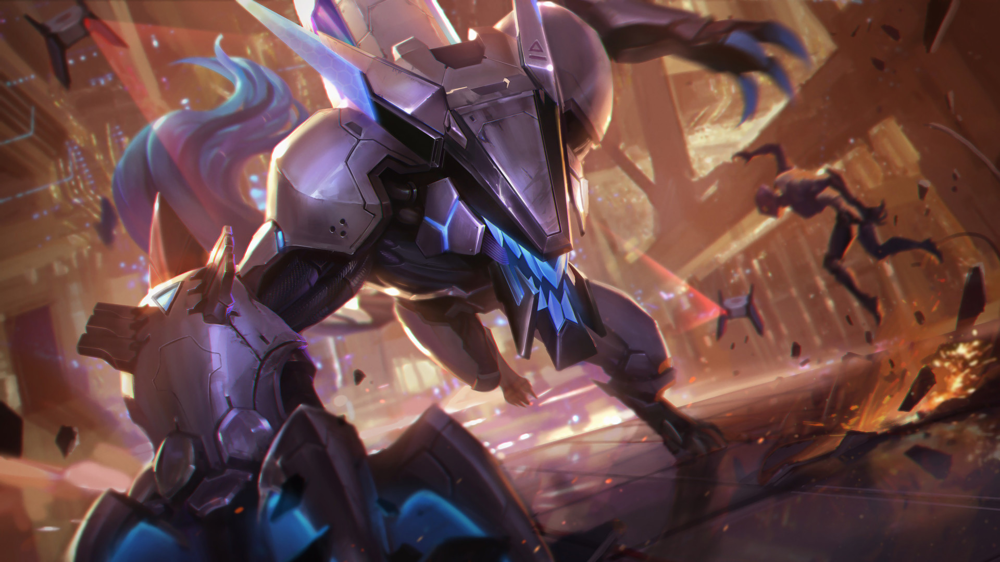

Why Warwick is life
Warwick's den
Why Warwick is love
Why Warwick is life
Why Warwick is essential
Why Warwick is crucial
Why Warwick is god
Why Warwick is life

Warwick fend for the livelihood of Zaunite
He's rumored to be Vander in the Arcane series, and Vander always put the safety of the Underground people first before making any decision.
Warwick do not kill indiscriminately
Even when he is turned feral, he remain conscious of his actions and only prey on those who has committed major crimes
Warwick feels guilty and bewildered everytime the chamber activate
Despite not being able to resist the chemical pumped into him when he scences blood, he wish to not be taken by its effect and fought back as much as he could
Warwick playstyle is straightforward and relentless
No matter how low a Warwick player HP is, through sheer will and non-stop barrage of attack, Warwick can heal back up and clutch a bad fight
Project Warwick can better showcase the struggle of man and machine
The skinline is dominated with human champions in bodytight suits and neon visors, however, Warwick can demonstrate the purpose of this skinline by having small details incorporated such as organic feet and tail. It presented more effort of resisting mechanical changes than all the other champions in this skinline
Warwick is no longer generic
Initially, he was just a typical werewolf that hunger for blood. Now, he still hunger for blood not for the stupid reason of needing to turn back into human, he is attracted to the scent forcefully but alos embraces his monstrous form.